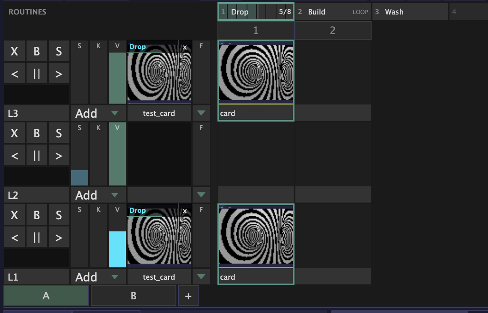
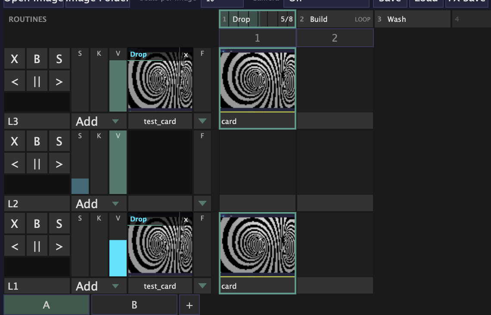
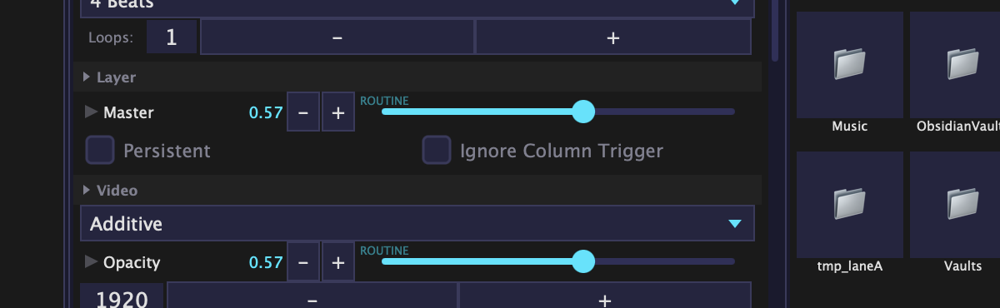
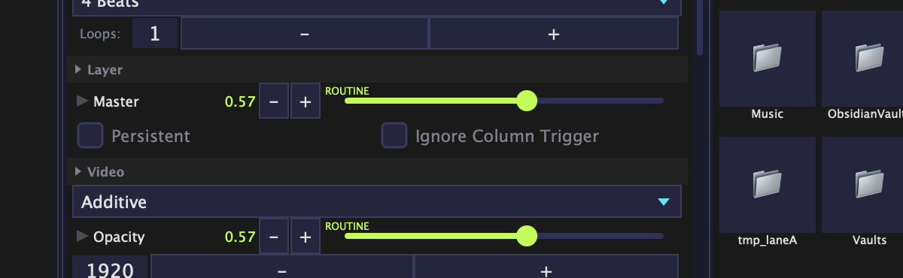
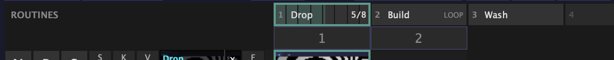
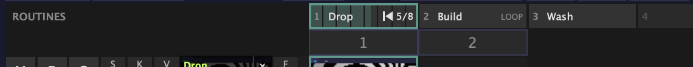
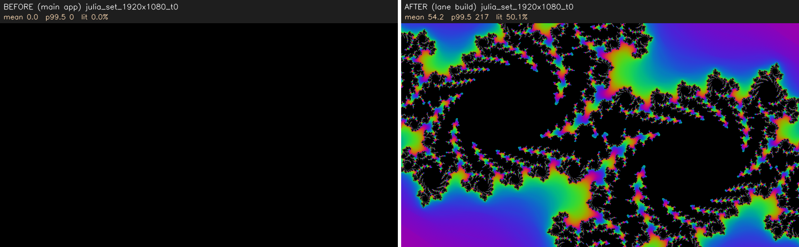
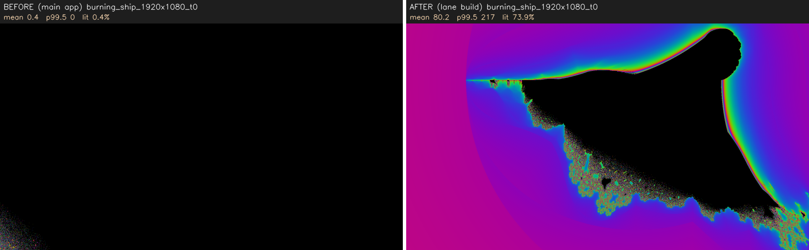
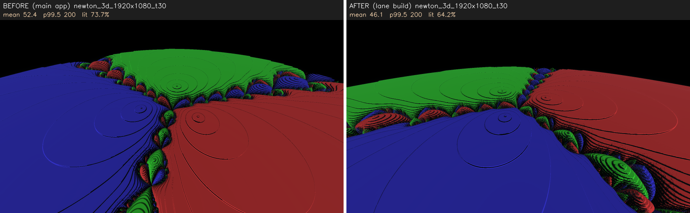
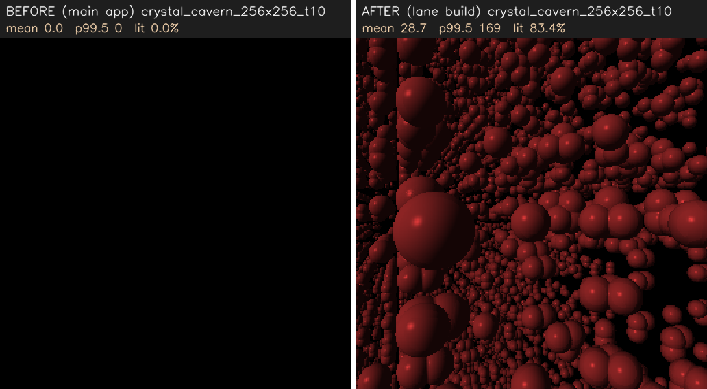

Each item has a default already built. Say nothing and the default stays. Page updated in place; refresh to see changes.
1. Routine highlight colour — cyan or chartreuse?
While a routine moves a control, the control lights up. The approved mockup used cyan. But cyan is already the colour
of every mapped knob and the Mod knobs, on every screen. A design critic flagged that you could not tell "a routine owns this" from "a normal mapped knob".
So it is now chartreuse (yellow-green), the one hue the app does not use yet. Switching back is one line.

Before: cyan (layer name bands "Drop", L1 fader)

Now: chartreuse

Before: inspector row, cyan

Now: chartreuse, with the word ROUTINE
Keep chartreuse, or back to cyan? Default: chartreuse.
2. The routine pads row sits right above the column numbers
Pads 1-8 are a fixed bank, shared by every deck. The column numbers below them belong to the deck. They look alike and line up, so "pad 2" could be read as "column 2" at a glance.

ROUTINES row (top) above the column numbers
OK as is, or should the pads row look different (or move to the bottom, above the deck tabs)? Default: top, as is.
3. Stopping a routine has no confirm
The small x on a routine's name band stops that routine on every layer it plays. The layer's X (clear) now also stops routines on that layer.
Neither can be undone. Both have a tooltip now, but a tooltip only shows if you hover first. "Delete routine" in the pad menu does ask first.
Fine without a confirm (fast, live)? Default: no confirm.
4. "Restart waiting" mark
Press a playing pad again: it restarts on the next bar. Until then the pad shows a small "back to start" mark next to "5/8".

Pad 1 with the restart mark
Visible enough from where you stand? Default: as is.
5. Projector output — all three parts built (any number of displays)
No test ever opens an output window on your screens, so these need you, the app and a second display:
Plug in a second display. Output menu (or the TopBar Outputs: Off button — same list): tick Display 2 (…). It shows exactly what the lower-left preview shows, same black bars, sharp, right size. The TopBar now reads Outputs: 1.
Untick it, or pick All Outputs Off: it disappears and nothing stays on any screen.
Tick Display 1 (…, main) — the laptop. The picture covers the app. Cmd+` (the key under Esc) brings the app back on top; Cmd+Shift+Esc closes every output. Plain Esc no longer closes outputs (muscle-memory change).
With the picture covering the laptop, click on it, then use your usual keys (clip keys, Cmd+F, the menu). They all still work — the picture never takes the keyboard. Cmd+F now toggles the laptop-screen output only.
Pull the projector cable while it plays: the picture is gone within a blink, nothing black stays anywhere. Plug it back: it returns on the projector by itself. Change the projector's resolution while it plays: it stays, resized.
With an output on, open the big signal bar (the preview hides): the projector keeps the last picture, frozen; close the bar and it moves again. Same when you minimise.
Quit with outputs on (Cmd+Q): every screen clean. Launch again: nothing opens by itself; Output > Restore Last Outputs brings the set back with one click (greyed when nothing saved is connected). Unticking a display makes the app forget it for Restore — quit with outputs ON to keep them.
Top edge of the projector: a see-through menu-bar strip? If yes: System Settings > Control Center > "Automatically hide and show the menu bar: Always".
Laptop 120 Hz + projector 60 Hz, fast motion: smooth, no tear line. TopBar fps with 1, 2, 3 outputs: the cost in your own numbers.
6. Routines after a freeze — catch up or skip?
Routines no longer drift late after the app hiccups (fixed today). If the app freezes for a moment while a routine plays, the moves it missed now all fire at once when it resumes, so the look is right again straight away.
Catch up (fire the missed moves at once) or skip them? Default: catch up. Skipping is a one-line switch.
Separate, rarer case: if the audio device itself pauses, the whole beat grid moves with it (the TopBar bar count too). Changing that is a bigger tempo-tracker decision — filed, not changed.
7. Sources that used to start black — new starting pictures
Julia set, Burning Ship and Newton 3D were black at their starting values; Crystal Cavern went black after ~2.5 s (the camera flew out of the cave); Sierpinski vanished at small sizes; Dot Field was nearly invisible when first added. All fixed. Please look at the new starting pictures:

Julia set: before / after

Burning Ship: before / after

Newton 3D at 30 s: before / after (now orbits instead of tumbling under the floor)

Crystal Cavern at 10 s: before / after (an endless cave)
Do these read as good starting points? Default: as built. Crystal Cavern now looks like "a wall of glossy balls" to one critic — keep, or rework the look later? It also costs ~5 ms per frame at 1080p (was ~3 ms while it showed nothing).
78 knobs that did nothing were removed (e.g. 70 "torus" knobs on 7 sources where only one source used them). Keep them removed, or make them work later? Default: removed. Old compositions still open.
Dot Field "depth" now does something (a brightness-contrast control) instead of nothing. OK? Default: yes.
Knobs like Thickness / Count / Size at 0 still draw nothing (legitimate). Keep "0 = nothing", or force a minimum? Default: keep.
Still open from earlier (defaults in force)
Fit "Bars": see-through (built) or solid black.
Deck defaults: New Deck = 3 empty layers; Load Deck adds a tab; Duplicate names it "<name> copy".
Outputs questions 1-7 (asked in chat today): one-click restore, plain Esc no longer closes outputs, screens not saved in files, no windowed output yet, picture comes back on replug, frozen while the signal bar is open, whole picture on every screen.